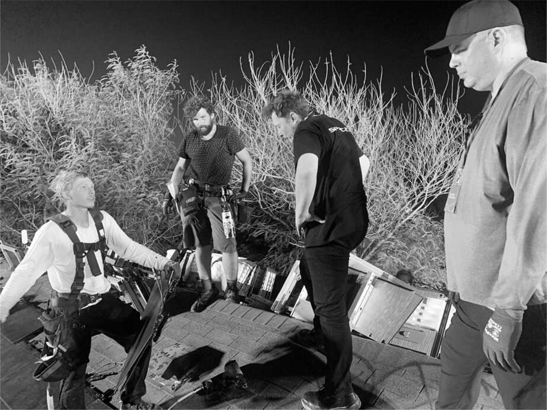

Các đợt làm việc căng thẳng của Musk diễn ra liên tiếp. Sau đợt lắp ráp Starship căng thẳng vào mùa hè năm 2021, nhóm tiếp theo nằm trong tầm ngắm của ông là đội ngũ mái năng lượng mặt trời.
Musk đã giúp đỡ những người anh em họ của mình, Peter và Lyndon Rive, ra mắt SolarCity vào năm 2006, và ông đã giải cứu nó mười năm sau đó bằng cách để Tesla mua lại với giá 2,6 tỷ đô la. Điều đó đã gây ra một vụ kiện tập thể từ một số cổ đông của Tesla, khiến Musk bị ám ảnh bởi việc thúc đẩy hoạt động kinh doanh để biện minh cho việc mua lại tại tòa án. Ông đã sa thải những người anh em họ của mình, những người đã tập trung vào các kế hoạch bán hàng tận nhà hơn là tạo ra một sản phẩm tốt. "Tôi ghét cay ghét đắng những người anh em họ của mình," ông nói với Kunal Girotra, một trong bốn giám đốc của Tesla Energy mà ông đã thuê và sa thải trong năm năm tiếp theo. "Tôi nghĩ tôi sẽ không bao giờ nói chuyện với họ nữa."
Ông liên tục thay đổi lãnh đạo bằng cách đòi hỏi tốc độ tăng trưởng thần kỳ về lắp đặt mái nhà, đặt ra thời hạn phi lý và sa thải họ khi không đạt được. “Mọi người đều rất sợ ông ấy,” Girotra nói, và kể lại một cuộc họp mà Musk đã tức giận đến mức đập bàn và gọi ông là “kẻ thất bại chết tiệt”.
Girotra bị thay thế bởi RJ Johnson, một cựu đại úy Lục quân Hoa Kỳ với vẻ ngoài nghiêm nghị, người đã đưa vào đội ngũ giám sát cứng rắn để quản lý các nhóm lắp đặt. Đầu năm 2021, khi số lượng lắp đặt không tăng đủ nhanh, Musk gọi Johnson đến và đưa ra tối hậu thư quen thuộc. “Anh có hai tuần để khắc phục việc này. Tôi đã sa thải anh em họ của mình và tôi sẽ sa thải anh nếu anh không thể tăng tốc độ lắp đặt lên gấp mười lần.” Johnson đã không làm được.
Tiếp theo là Brian Dow, một chiến binh lạc quan với tinh thần nhiệt huyết, người đã từng sát cánh cùng Musk trong giai đoạn bùng nổ nhà máy pin Nevada năm 2017. Mọi việc khởi đầu khá tốt. Ngồi tại chiếc bàn nhỏ trong phòng khách ở Boca Chica, Musk gọi điện cho Dow ở California để trao đổi về những gì ông muốn. “Đừng lo lắng về chiến thuật bán hàng, đó là sai lầm mà anh em họ tôi đã mắc phải,” ông nói. “Sản phẩm tuyệt vời sẽ tự lan truyền.” Mục tiêu chính là tạo ra một mái năng lượng mặt trời tuyệt vời và dễ lắp đặt.
Như thường lệ, ông nhắc lại với Dow các bước của thuật toán và tiếp tục chỉ ra cách áp dụng chúng cho mái năng lượng mặt trời. “Hãy đặt câu hỏi với mọi yêu cầu.” Cụ thể, họ nên đặt câu hỏi về yêu cầu rằng người lắp đặt phải làm việc xung quanh mọi lỗ thông hơi và ống khói nhô lên từ ngôi nhà. Ông đề xuất rằng các ống dẫn của máy sấy và quạt thông gió nên được cắt bỏ và các tấm lợp năng lượng mặt trời được đặt lên trên. Không khí vẫn có thể thoát ra bên dưới các tấm lợp. “Loại bỏ.” Hệ thống mái nhà có 240 bộ phận khác nhau, từ ốc vít, kẹp đến thanh ray. Hơn một nửa nên được loại bỏ. “Đơn giản hóa.” Trang web chỉ nên cung cấp ba loại mái: nhỏ, vừa và lớn. Sau đó, mục tiêu là “tăng tốc”. Lắp đặt càng nhiều mái nhà càng tốt mỗi tuần.
Musk quyết định rằng ông cần tìm hiểu từ chính những người lắp đặt về những gì có thể làm để tăng tốc công việc. Vào một ngày tháng 8 năm 2021, ông bảo Dow đến Boca Chica cùng một nhóm có thể lắp đặt mái nhà trên một trong 31 ngôi nhà liền kề với Starbase, nơi ông sinh sống.
Trong khi các công nhân của Dow vội vã xem liệu họ có thể lắp đặt mái nhà trong một ngày hay không, Musk dành buổi chiều trong phòng họp Starbase để xem xét các thiết kế cho tên lửa và động cơ trong tương lai. Như thường lệ, các cuộc họp kéo dài hơn dự kiến, với việc Musk đưa ra những ý tưởng mới và cho phép cuộc trò chuyện lan man. Dow hy vọng rằng Musk sẽ đến địa điểm trước khi mặt trời lặn, nhưng gần 9 giờ tối ông mới lên xe Tesla, lái xe về nhà để đón X, rồi cõng cậu bé trên vai đi bộ xuống khu nhà nơi các nhân viên lắp đặt đang làm việc.
Ngay cả lúc đó, trời cũng đã nóng ẩm 34 độ C. Tám công nhân đẫm mồ hôi vừa đập muỗi vừa cố giữ thăng bằng trên mái nhà được chiếu sáng bằng đèn pha. Trong khi X đi quanh các dây cáp và thiết bị bên dưới, Musk trèo lên một cái thang đến đỉnh mái nhà, đứng chênh vênh một cách nguy hiểm. Ông ấy không hài lòng. Ông nói có quá nhiều ốc vít. Mỗi cái đều phải được đóng đinh, làm tăng thời gian lắp đặt. Ông khăng khăng phải bỏ đi một nửa. "Thay vì hai đinh cho mỗi foot, hãy thử chỉ dùng một cái," ông ra lệnh. "Nếu có bão, cả khu phố này sẽ tan nát, vậy ai quan tâm? Một cái đinh là được rồi." Ai đó phản đối rằng điều đó có thể dẫn đến rò rỉ. "Đừng lo lắng về việc làm cho nó chống thấm như tàu ngầm," ông nói. "Nhà tôi ở California cũng từng bị dột. Ở đâu đó giữa cái rây và tàu ngầm là được rồi." Ông cười một lát rồi lại trở về vẻ mặt nghiêm nghị.
Không có chi tiết nào là quá nhỏ. Ngói và lan can được vận chuyển đến các địa điểm đóng trong thùng các tông. Điều đó thật lãng phí. Mất thời gian để đóng gói rồi lại mở ra. Ông nói hãy bỏ thùng các tông đi, ngay cả ở kho. Họ nên gửi cho ông ấy ảnh từ các nhà máy, kho hàng và địa điểm mỗi tuần cho thấy họ không còn sử dụng thùng các tông nữa.
Khuôn mặt ông dần trở nên căng thẳng và tối sầm lại, giống như bầu trời báo hiệu một cơn bão đang ập đến từ vịnh. "Chúng ta cần đưa các kỹ sư thiết kế hệ thống này ra đây để xem việc lắp đặt khó khăn như thế nào," ông nói giận dữ. Rồi ông bùng nổ. "Tôi muốn thấy các kỹ sư tự mình lắp đặt nó. Không chỉ làm trong năm phút. Mà phải ở trên mái nhà hàng ngày, hàng ngày trời ơi!" Ông ra lệnh rằng, trong tương lai, tất cả mọi người trong đội lắp đặt, kể cả kỹ sư và quản lý, đều phải dành thời gian khoan, đóng đinh và đổ mồ hôi cùng các công nhân khác.
Khi chúng tôi cuối cùng cũng trèo xuống đất, Brian Dow và phó của anh ta, Marcus Mueller, đã tập hợp hàng chục kỹ sư và nhân viên lắp đặt ở sân bên để nghe ý kiến của Musk. Chúng không hề dễ chịu. Ông hỏi tại sao việc lắp đặt mái ngói năng lượng mặt trời lại mất gấp tám lần so với mái ngói thông thường? Một trong những kỹ sư, tên là Tony, bắt đầu cho ông xem tất cả các dây và linh kiện điện tử. Musk đã biết cách hoạt động của từng bộ phận, và Tony đã mắc sai lầm khi tỏ ra vừa tự tin vừa kẻ cả. "Anh đã làm bao nhiêu mái nhà rồi?" Musk hỏi anh ta.
"Tôi có hai mươi năm kinh nghiệm trong ngành mái nhà," Tony trả lời.
"Nhưng anh đã lắp đặt bao nhiêu mái nhà năng lượng mặt trời?"
Tony giải thích rằng anh ta là một kỹ sư và chưa thực sự lắp đặt trên mái nhà. "Vậy thì anh chả biết cái quái gì cả," Musk đáp trả. "Đây là lý do tại sao mái nhà của anh tệ hại và mất nhiều thời gian để lắp đặt."
Trong hơn một giờ, cơn giận của Musk lúc lên lúc xuống, nhưng chủ yếu là lên. Nếu họ không tìm ra cách lắp đặt mái nhà nhanh hơn, bộ phận Năng lượng Tesla sẽ tiếp tục thua lỗ và ông sẽ đóng cửa nó. Ông nói đó sẽ là một bước lùi không chỉ đối với Tesla mà còn đối với cả hành tinh. "Nếu chúng ta thất bại," ông nói, "chúng ta sẽ không đạt được một tương lai năng lượng bền vững."
Dow, háo hức làm hài lòng, đồng ý nhiệt tình với mọi tuyên bố. Họ đã lập kỷ lục vào tuần trước bằng cách lắp đặt bảy mươi tư mái nhà trên toàn quốc. "Chưa đủ," Musk đáp. "Chúng ta cần tăng gấp mười lần." Sau đó, ông sải bước xuống phố trở về ngôi nhà nhỏ của mình, vẻ mặt tức giận. Khi đến cửa trước, ông quay lại và nói: "Các cuộc họp về mái nhà năng lượng mặt trời giống như những nhát dao đâm vào mắt tôi."
Giữa trưa hôm sau, nhiệt độ ngoài trời lên tới 36 độ C, lại chẳng có bóng râm. Dow và đội lắp đặt đang trên mái nhà kế bên căn nhà họ đã làm hôm trước. Hai người trong đội bị say nắng và nôn mửa, nên Dow cho họ về nhà. Một số người khác gắn quạt chạy pin vào áo bảo hộ. Theo chỉ thị của Musk, họ chỉ dùng một chiếc đinh cho mỗi tấm ngói, nhưng cách này không hiệu quả. Ngói bị bật lên và xoay vòng. Vì vậy, đội lắp đặt lại dùng hai chiếc đinh. Tôi hỏi liệu Musk có nổi giận không, và được đảm bảo rằng nếu họ đưa ra bằng chứng thực tế, ông ấy sẽ thay đổi ý định.
Họ đã đúng. Khi Musk đến lúc 9 giờ tối, họ trình bày lý do cần chiếc đinh thứ hai, và ông gật đầu. Đó là một phần của thuật toán: nếu bạn không phải khôi phục lại 10% bộ phận đã loại bỏ, thì bạn chưa loại bỏ đủ. Tâm trạng ông ấy tốt hơn vào đêm thứ hai này, một phần vì quy trình lắp đặt đã được cải thiện, một phần vì tâm trạng ông ấy vốn thất thường. Sau cơn bão là trời yên biển lặng. "Làm tốt lắm," ông nói. "Các anh nên bấm giờ từng bước. Như vậy sẽ thú vị hơn, giống như một trò chơi."
Tôi hỏi ông về cơn giận tối hôm trước. "Đó không phải cách tôi ưa thích để xử lý vấn đề, nhưng nó hiệu quả," ông nói. "Sự cải thiện từ hôm qua đến hôm nay là rất lớn. Sự khác biệt lớn là hôm nay các kỹ sư thực sự ở trên mái nhà lắp đặt thay vì ngồi trước bàn phím."
Sự nhiệt tình của Brian Dow chưa bao giờ giảm sút. "Tôi là người sẵn sàng quét dọn sàn nhà nếu điều đó giúp ích cho công ty," anh nói với Musk. Nhưng anh đang gánh vác một nhiệm vụ bất khả thi. Việc lắp đặt mái năng lượng mặt trời tốn nhiều công sức và không thể mở rộng quy mô. Musk là bậc thầy trong việc thiết kế nhà máy có thể giảm chi phí sản phẩm vật lý bằng cách sản xuất hàng loạt với số lượng ngày càng tăng, nhưng chi phí lắp đặt mỗi mái nhà gần như không đổi dù bạn làm mười hay một trăm cái mỗi tháng. Musk không đủ kiên nhẫn cho những công việc kinh doanh như vậy.
Chỉ ba tháng sau khi giao cho anh phụ trách mảng kinh doanh mái năng lượng mặt trời của Tesla, Musk gọi Dow trở lại Boca Chica. Hôm đó là sinh nhật của Dow, và anh đã định ở bên gia đình, nhưng anh vội vã đến đó. Khi lỡ chuyến bay nối chuyến ở Houston, anh thuê một chiếc xe và lái xe sáu tiếng dọc bờ biển Texas, đến nơi lúc 11 giờ đêm. Một đội đang làm lại mái nhà của căn nhà chúng tôi đã ở vào tháng 8, lần này với các phương pháp và linh kiện mới được sắp xếp hợp lý. Khi Dow lái xe đến, Musk đang đứng trên mái nhà và mọi thứ dường như đang diễn ra khá tốt. "Đội đang làm rất tốt với phương pháp mới," Dow nói. "Họ đã hoàn thành việc lắp đặt chỉ sau một ngày."
Nhưng khi Dow trèo lên và gặp ông ấy trên đỉnh mái nhà, Musk bắt đầu hỏi dồn dập về chi phí. Dow là một người đàn ông to lớn, thậm chí còn to hơn cả Musk, và họ khó giữ thăng bằng trên mái nhà trơn trượt vì sương biển. Vì vậy, họ ngồi trên đỉnh mái nhà trong khi Dow xem xét dữ liệu tài chính trên iPhone của mình. Musk nghiến răng khi thấy họ đang lỗ bao nhiêu tiền cho mỗi mái nhà lắp đặt. "Anh phải cắt giảm chi phí," ông nói. "Anh phải trình bày cho tôi kế hoạch cắt giảm chi phí xuống một nửa vào tuần tới." Như trước đây, Dow thể hiện sự nhiệt tình của mình. "Được rồi, hãy làm thôi," anh nói. "Chúng ta sẽ làm rất tốt và cắt giảm chi phí."
Ông ấy đã dành cả cuối tuần để soạn thảo kế hoạch cắt giảm chi phí trình bày cho Musk vào thứ Hai. Nhưng ngay khi cuộc họp bắt đầu, Musk đã chuyển chủ đề và chất vấn Dow về số lượng lắp đặt đã hoàn thành trong tuần qua và chi tiết về việc tái bố trí nhân sự. Dow không biết một số câu trả lời, và ông phản đối rằng ông đã làm việc từ ngày sinh nhật của mình cho kế hoạch cắt giảm chi phí chứ không phải những chi tiết mà Musk đang hỏi. "Cảm ơn anh đã cố gắng," Musk cuối cùng nói. "Nhưng thế này là chưa đủ."
Dow mất một lúc mới nhận ra rằng Musk đang sa thải mình. "Đó là cách sa thải kỳ quặc và khó hiểu nhất mà bạn có thể tưởng tượng," Dow sau này nói. "Tôi đã có rất nhiều kỷ niệm với anh ấy, và sâu thẳm Elon biết rằng tôi có một điều gì đó đặc biệt. Anh ấy biết rằng tôi có thể làm rất tốt, bởi vì chúng tôi đã từng làm điều đó cùng nhau trong quá khứ, tại nhà máy pin Nevada. Nhưng anh ấy nghĩ rằng tôi đang mất dần phong độ, mặc dù tôi đã bỏ lỡ sinh nhật với gia đình để ở trên mái nhà đó với anh ấy."
Sau khi Dow rời đi, Musk vẫn không thể làm cho các con số khả quan hơn. Một năm sau, Tesla Energy chỉ lắp đặt được khoảng ba mươi mái nhà mỗi tuần, cách xa con số một nghìn mà Musk liên tục yêu cầu. Nhưng nhiệt huyết giải quyết vấn đề của ông đã giảm bớt vào tháng 4 năm 2022, khi một tòa án ở Delaware phán quyết có lợi cho ông trong vụ kiện về việc Tesla mua lại SolarCity. Khi mối đe dọa đó được gỡ bỏ, ông không còn cảm thấy quá tuyệt vọng để chứng minh rằng việc mua lại này có ý nghĩa về mặt tài chính.

Kiểm tra việc lắp đặt mái năng lượng mặt trời với Brian Dow ở ngoài cùng bên phải